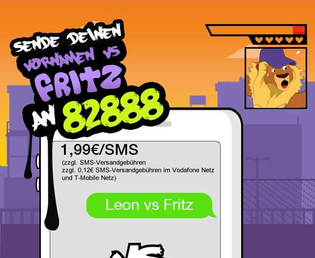

Frecher Fritz ist ein lustiger Premium SMS Service. Er ist der König der Beleidigung. Das Ziel dieser Dienstleistung ist es in einen lustigen - auf keinen Fall ernst zunehmenden - Beleidigungs-Kampf mit Sprüchen einzutreten. Sende erst eine SMS an 82888 mit deinem NAMEN VS FRITZ. Frecher Fritz wird mit einer lustigen Beleidigung antworten. Nachdem du eine Antwort bekommen hast, sende eine noch kreativere Beleidigung an Frecher Fritz. Der Kampf geht solange bis einer gewonnen hat! Die SMS wird in der Regel innerhalb von wenigen Minuten beantwortet.
Die Schlange Frecher Fritz wurde auf einer Insel in Brasilien geboren, wo man sich gegenseitig nicht hilft und immer böse zueinander ist. Diese Insel wird bewohnt von vielen Schlangen, die einander nicht mögen. Die gemeinen Kriechtiere sind böse und studieren an der Uni des Bösen, wie man richtig gemein zu anderen Leuten ist. Durch einen Unfall wurde Frecher Fritz verstrahlt und ist jetzt ein großer Superbösewicht.
Jetzt hat er eine Mission: Er reist um die ganze Welt, um Leute zu finden, die er nicht mag. Sein Ziel ist es, gemein zu ihnen zu sein und sie zum Weinen zu bringen. Polizei und Staatsanwaltschaft sind schon auf der Suche nach ihm, aber er ist clever und wendig, sodass sie ihn niemals fangen werden. Er wird in 60 Ländern auf der ganzen Welt gesucht - ob TOT oder LEBENDIG!!! Er macht es sich zur seiner Lebensaufgabe, das Leben der Menschen zu vergiften und er verteilt sein Gift durch die gemeinen Nachrichten. Deswegen leckt er sich gierig seine langen Zähne und schreibt den ganzen Tag lang fleißig SMS. Sei vorsichtig. Er ist der König der Beleidigung. Niemand konnte bisher gegen ihn gewinnen - fordere ihn heraus, wenn du dich traust!